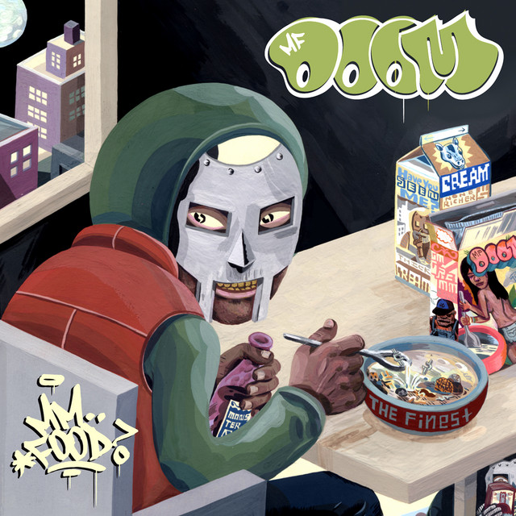

ALBUM FILE // 003
MM..FOOD
MF DOOM - 2004
Released in November 2004, MM..FOOD is a brilliant, highly conceptual masterpiece. Operating on a clever anagram of his own name, DOOM uses culinary references, weird snacks, and vintage Saturday-morning food commercials as an intricate metaphor for the greed, beefs, and consumption of the hip-hop industry.
Release Year
2004
Genre
Conceptual Underground Hip-Hop
Sound
1980s R&B grooves, J.J. Fad beatbox loops, obscure Fantastic Four baking skits, and elite syllable math.
BACKGROUND
An Anagram Of Anarchy
Released just eight months after Madvillainy, MM..FOOD proved that the year 2004 belonged entirely to the metal mask. Partnering with Minneapolis indie label Rhymesayers Entertainment, DOOM took a bizarre premise—an entire album about dinner, drinks, and dessert—and turned it into a high-level philosophical breakdown of street betrayal and industry gluttony.
The record is famous for its infamous four-track "skit run" in the middle of the album. While standard rappers used skits as throwaway filler, DOOM acted like an insane audio-surgeon, splicing together 1960s Spider-Man cartoons and old Frank Zappa interviews into an avant-garde audio collage that actually pushed the Supervillain's storyline forward.
STANDOUT TRACKS
Essential Course Menu
- Rapp Snitch Knishes (feat. Mr. Fantastik) - An undisputed cultural anthem. Features a gorgeous David Matthews guitar loop and a timeless, hilarious chorus mocking studio-gangsters who use their own songs as courtroom confessions.
- Hoe Cakes - Built over a wildly infectious, sped-up Anita Baker vocal and a classic beatbox loop. DOOM compares his rapid-fire rhyme output to selling hot flapjacks on the block.
- One Beer - Produced by Madlib and originally intended for Madvillainy, this track flips a hyper-speed sample of French jazz group Cortex into a dizzying display of untouchable flow.
- Deep Fried Frenz - A painfully honest breakdown of fake friends and opportunists, anchored by a classic Whodini sample ("Friends") layered over a 1970s Ronnie Laws saxophone groove.
Why This Album Matters
MM..FOOD cemented DOOM’s reputation as hip-hop's ultimate world-builder. It proved that a rap album didn't have to be self-serious and miserable to be deeply lyrical; you could make profound statements about human nature while rapping about Doritos, weird cheeses, and warm beer. It remains the absolute gold standard for concept albums in modern music.